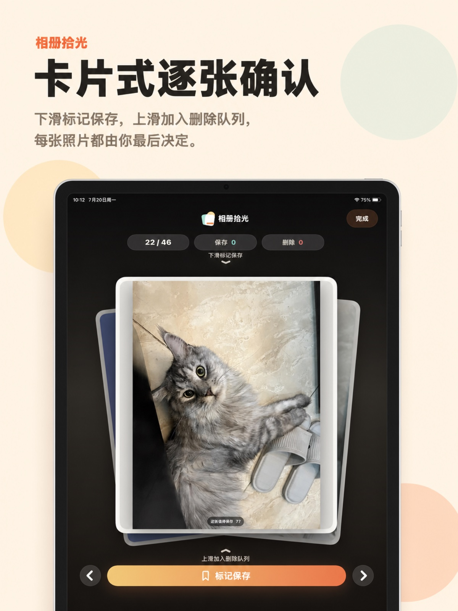
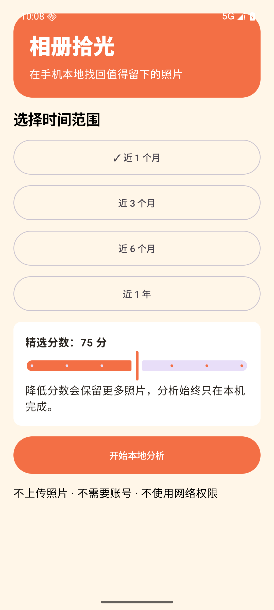
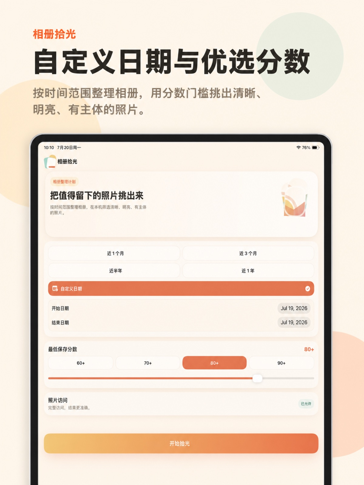
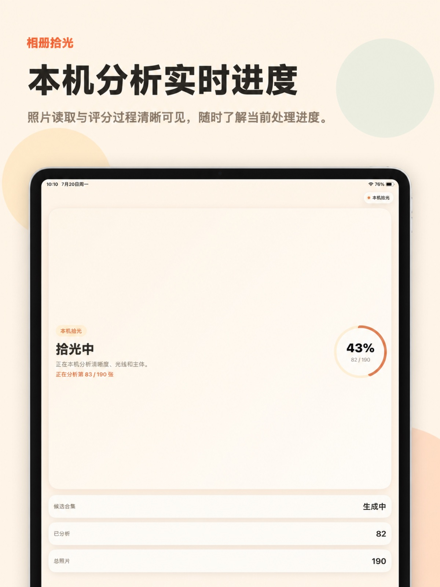
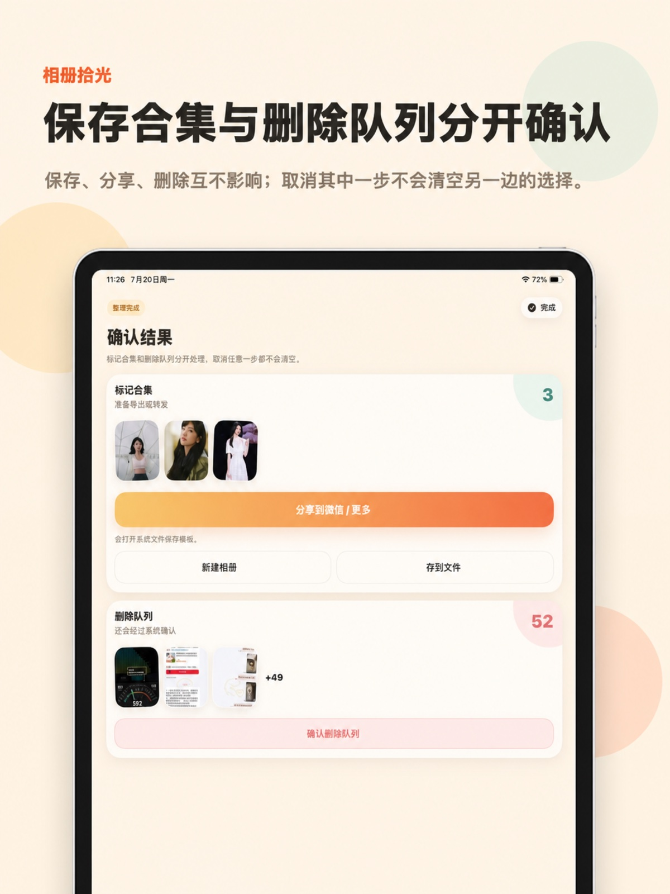

完全本机分析
照片不会上传到开发者服务器。
Android · iPhone · iPad
按时间范围整理相册，在本机筛选清晰、明亮、有主体的照片。所有分析都在你的设备上完成，每一步都由你确认。


照片不会上传到开发者服务器。
打开即用，不收集个人资料。
保存与删除队列始终分开处理。
整理，而不是替你冒险决定
相册拾光从大量照片中生成候选合集，你可以逐张确认保存、跳过或加入删除队列，最后再分别处理导出与删除。流程简单，决定始终可控。
真实 App 界面
以下画面均来自相册拾光的真实运行界面，不使用概念图或网页模拟图。

按最近一段时间或自定义日期开始。

进度清晰可见，照片不离开设备。
大图查看，保存、跳过或加入删除队列。

保存合集和删除队列互不干扰。
同样的本机分析和温暖纸张风格。
核心功能
在设备本机分析清晰度、光线和主体，不上传照片。
按最近时间或自定义起止日期筛选，适合旅行和阶段性整理。
查看候选照片，标记保存、跳过或加入删除队列。
取消任意一步都不会清空另一边的选择，降低误操作风险。
支持保存到相册、系统分享和存到文件，按当前场景处理结果。
使用流程
从最近照片或自定义起止日期开始整理。
在设备上分析照片质量，生成可逐张查看的候选合集。
保存、删除和导出分开处理，保持每一步可控。
技术支持
欢迎反馈照片整理体验，我们会通过邮箱为你提供帮助。
Android 正式版
安装包仅从本官网提供。首次侧载安装时，Android 会要求你确认当前浏览器的安装权限。
扫描下方二维码，或点击“无法扫码？直接下载”，等待 38 MB APK 下载完成。
打开下载文件；如系统提示，请允许当前浏览器安装未知应用。
确认安装后打开相册拾光，按系统提示授予照片访问权限。

电脑访问请扫码
使用手机相机或浏览器扫描二维码，直接从相册拾光官网下载 Android v1.0.0 安装包。
Android 10–16 · v1.0.0 · 38 MB 无法扫码？直接下载如需核验文件完整性，请将计算结果与下面的校验值逐字比较。
45cecf8a0eff0941af60edee0f6bf8f44db891200c3aae917fd5cc380b4e6f48
下载校验文件
生效日期：2026-07-22
相册拾光是一款本机相册整理工具，用于帮助用户筛选和查看自己照片库中的照片。当前版本不收集来自 App 的个人数据。
相册拾光会请求访问照片库，以提供按日期筛选、照片质量分析、预览、标记保存和删除队列确认等核心功能。经用户授权后，App 可在设备本机读取照片元数据、缩略图和图像内容。照片分析在设备本机完成，当前版本不会将照片上传到开发者服务器。
当用户选择保存标记照片时，App 可在用户照片库中创建或更新相册。Android 版使用系统提供的照片、分享与文件选择机制；iOS 版使用系统分享表单与文档选择器。目标位置和任何数据传输都由用户选择的系统操作控制。
相册拾光可以帮助用户查看加入删除队列的照片。当前版本会把保存决定和删除决定分开处理，以便用户有意识地确认每一步。
当前版本不需要账号，不包含广告 SDK，不包含第三方分析 SDK，不跟踪用户跨 App 或网站的活动，也不包含第三方崩溃上报 SDK。
相册拾光是通用工具类 App，不会有意收集儿童个人数据。如果未来版本加入云功能、账号、分析或其他数据收集，本隐私政策和相应应用市场隐私信息会在发布前更新。
隐私或技术支持问题请联系：544905484@qq.com